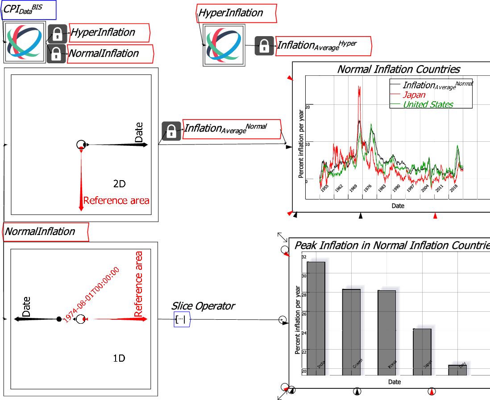

The order of an axis can also be determined by the data values for specific axis selections. The command is only available if the axis selections return a single column of data for ranking—for example, in the inflation data, a single date is chosen so that the value of the inflation for all Reference Areas (countries) can be compared. There are four options generated by the combination of dynamic or static sorting, and forward or backward direction. Static sorting sorts the single axis by the value of the data, and does not alter that data as (for example) different dates are chosen using the selector dot. Dynamic sorting alters the order so that the axis is resorted when (for example) a different date is selected. In the next figure, dynamic sorting is applied to the Reference Area axis for the rate of inflation. The output is also put through a Slice operator, so that only the top 5 countries are output.
